Linked Open Data for Cultural Heritage Institutions
Ilian Uzunov & Vladimir Alexiev
Museum Exhibits and Standards: A Look Ahead, Fulbright Comission, Sofia, Bulgaria, 2016-11-28
2D presentation (O for overview, ? for help). Continuous HTML. PDF. Publications
Table of Contents
- About Ontotext
- GLAM Content Standards
- GLAM Metadata Schemas
- GLAM Ontologies
- GLAM LOD Datasets (LODLAM)
- LODLAM Projects
- Questions?
About Ontotext
Subtitle "Build Narratives through Connecting Artifacts".
Also see full version of webinar (134 slides)

GLAM vs Internet
GLAM, CH, DH?
- Cultural Heritage (CH): the sum of our non-economic heritage
- Obvious implications to economically significant sectors, eg tourism
- Some say it's the source of all creativity, would you agree?
- Includes old and new (eg digitally-born), material and immaterial, tangible and intangible, permanent and temporal (eg interactive installations)
- Galleries, Libraries, Archives, Museums (GLAM): sisterhood of institutions that care for our CH, each with its own perspective and priorities
- Digital Humanities (DH): the use of computers in the humanities.
- Eg some UK universities with DH programs: @KingsDH @UCLDH @DH_OU @CamDigHum
Google NGrams: Phrases in Books
Search for "library, museum" vs "Google, Facebook, Twitter" in books: the web sites are negligible
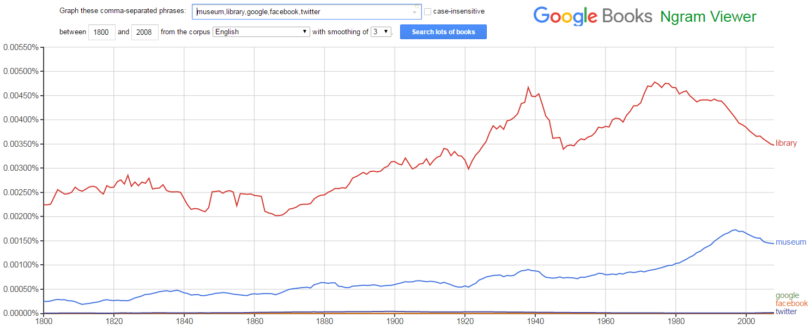
Google NGrams: Two Specific Orgs
Compare two specific orgs: "Facebook" is more popular in recent books, compared to "British Museum" over time

Google Trends: Search Popularity
Web searches over the last 12 years: "Facebook, Google" are much more popular than "library, museum"

How To Survive in the Internet Age?
Since ancient times GLAMs have been the centers of knowledge and wisdom
- Aren’t Google, Wikipedia, Facebook, Twitter and smart-phone apps becoming the new centers of research and culture (or at least popular culture)?
- Will GLAMs fall victims to teenagers with smartphones browsing Facebook? If the library's attitude is "Come search in our OPAC" then certainly yes
- How to preserve the role of GLAMs into the new millennium?
To survive, GLAMs must adopt the internet as their default modus operandi
- Web 1.0: presentation
- Web 2.0: interaction
- Web 3.0 (semantic web): data linking, enriching/disambiguating text using NLP/IE approaches
Why Linked Open Data (LOD) is Important
- Culture is naturally cross-institutional, cross-border, multilingual, and interlinked
- LOD allows making connections between (and making sense of) the multitude of digitized cultural artifacts available on the net
- LOD enables large-scale Digital Humanities research, collaboration and aggregation; technological renewal of CH institutions
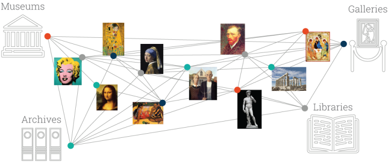
GLAM Content Standards
GLAM data is complex and varied
- Exception is the rule
- Many metadata format variations
- Data comes from a variety of systems
Thus professional organizations have found it useful to define content standards
- Describe what data to capture (and sometimes how to go about it)
- Before formalizing how to express it in machine-readable form
Examples are extremely useful for data modelers to decide how to map the data
Museum Content Standards
Cataloging Cultural Objects: content standard for art, architecture, museums

SPECTRUM
 UK Museum Collections Management Standard
UK Museum Collections Management Standard
- Defines procedures for museums to follow, and the attendant data
- Covers 21 procedures: Pre-entry, Object entry, Loans in, Acquisition, Inventory control, Location and movement control, Transport, Cataloguing, Object condition checking and technical assessment, Conservation and collections care, Risk management, Insurance and indemnity management, Valuation control, Audit, Rights management, Use of collections, Object exit, Loans out, Loss and damage, Deaccession and disposal, Retrospective documentation
- Addresses accreditation
Archival Content Standards
- ISAD(G): archival materials
- ISAAR(CPF): agents (corporations, people, families)
- ISDF: functions (eg Secretary of some society)
- ISDIAH: archival holding institutions
Image by D.Pitti, 2015
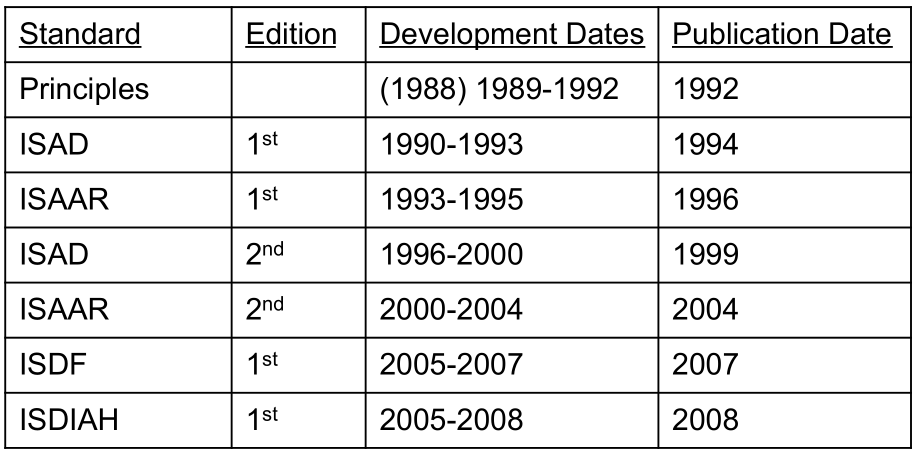
Library Content Standards
- AACR2 (Anglo-American Cataloging Rules 2)
- International Standard Bibliographic Description (ISBD)
- Resource Description and Access (RDA)
Extremely detailed and comprehensive (see RDA later). But sometimes pay more attention where to put the commas than to:
- Data sharing
- Global availability of resources
- Sharing the cataloging burden
GLAM Metadata Schemas
How many of the standards listed in Seeing Standards: A Visualization of the Metadata Universe apply to your work? (by Jenn Riley, Associate Dean for Digital Initiatives at McGill University Library)

Seeing Standards (2)

GLAM Ontologies
Why do they call conversion to RDF "lifting" and back to some other format "lowering"?
- RDF is a simple abstracted data model
- Doesn't have nesting biases like XML: whether a sub-element is nested or referenced by ID. Has less syntactic idiosyncrasies
- (RDF/XML is awful, but there is Turtle for readability, or JSONLD for programmer convenience)
- The model is self-describing in a distributed way: if a class/property is looked up, should return description and info
Europeana Data Model
Model used by the Europeana aggregator (53M objects), and adopted by Digital Public Library of America (DPLA) Based on:
- OAI ORE (Open Archives Initiative Object Reuse & Exchange): organizing object metadata and digital representations (WebResources)
- Dublin Core: descriptive metadata
- SKOS (Simple Knowledge Organization System): conceptual objects (concepts, agents, etc)
- CIDOC-CRM inspired: events, some relations between objects
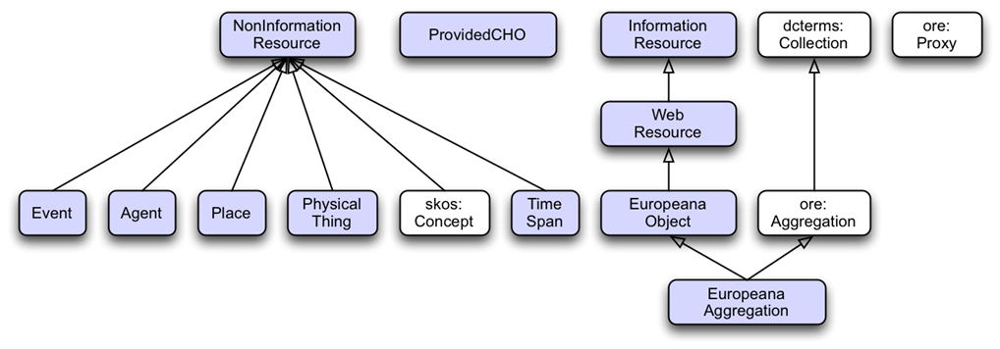
EDM Semantic Graph
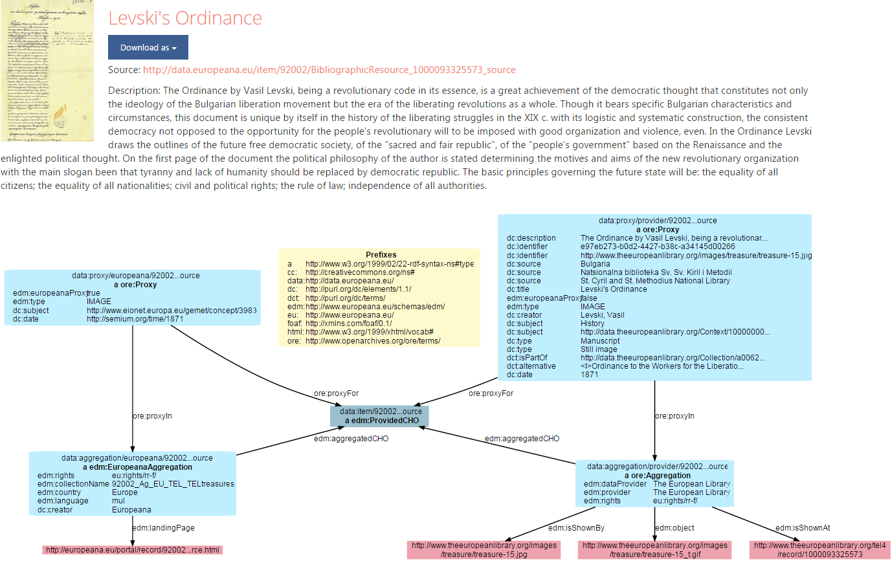
CIDOC CRM
CIDOC CRM: comprehensive reference model used for history, historic events, archaeology, museum data, etc by CIDOC (ICOM documentation committee). Standardized as ISO 21127:2014, still evolving. About 85 classes, fundamental branches: Persistent (endurant) vs Temporal (perdurant), Physical vs Conceptual
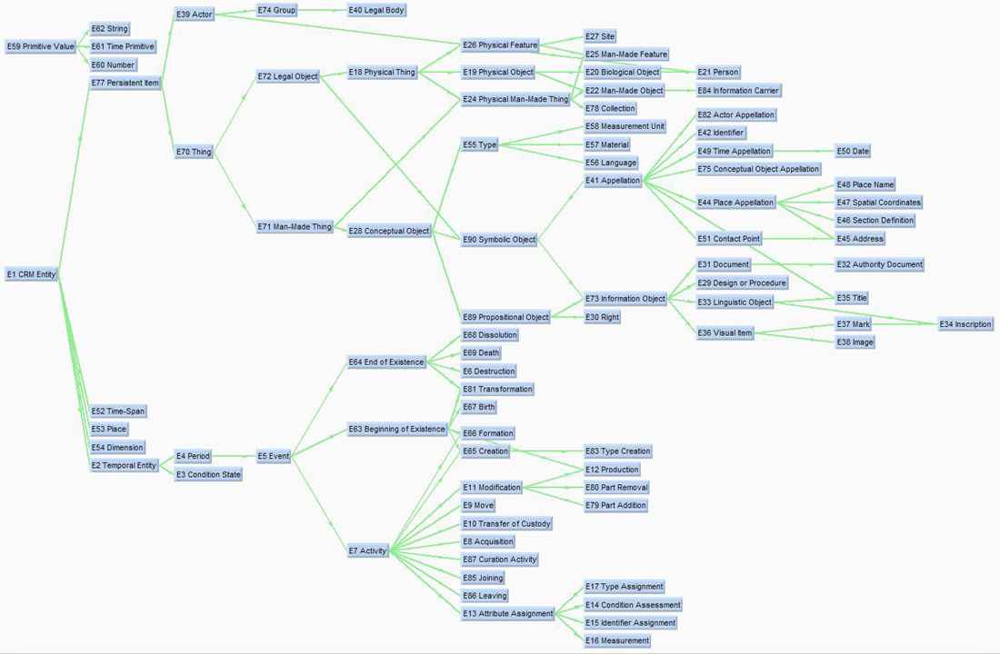
Web Annotation (Open Annotation, OA)
W3C TR: mark, annotate, relate any web resources, eg: Webpage and bookmark, Image and region over it, Document and translation, Paragraph and commentary. Diagram of Complete Example from spec (using my rdfpuml)

International Image Interop Framework (IIIF)
Standard API for DeepZoom (hi-res) images. Supported by many servers and viewers. http://iiif.io
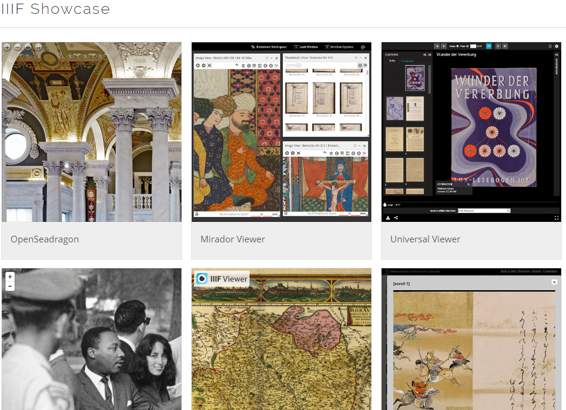
Library Ontologies
War of the Bibliographic Ontologies?
- BIBO: used for a long time, pragmaic
- FRBRer: pragmatic realization of FRBR, but little uptake (not rich enough?)
- FRBRoo: based on CIDOC CRM, perhaps too complex
- Fabio, Cito, Doco and friends: modern, includes new features (eg citation intent)
- BibFrame: sponsored by LoC, but soundly criticized for modeling mistakes
- RDAregistry.info: basic FRBR classes, numerous properties for all kinds of things. Used for 100M records at TEL
- SchemaBibEx (http://bib.schema.org): steps on a clean model sponsored by the big 4 search engines (Google, MS Bing, Yahoo, Yandex.ru). Developed by OCLC. May end up being used for 300M records at WorldCat.
Archival Ontologies
3 attempts to represent EAD as RDF, but IMHO neither is very good.
- Eg "The Semantic Mapping of Archival Metadata to the CIDOC CRM Ontology" (Journal of Archival Organization, 9:174–207, 2011) proposes to represent the EAD levels hierarchy (from Fonds down to Items) as five parallel CRM hierarchies
Records in Context (RiC): new upcoming semantic standard by ICA
- Addresses the scope of EAD, EAC, EAG in one framework. Inspired by national standards, FRBR (FRBR-LRM), CIDOC CRM
- Progress report (2015), Mlist for comments
- Conceptual Model 1.0 (Sep 2016): Document key components of archival description, properties of each, relations between them
- Ontology: after finalizing the Conceptual Model, Expressed in OWL, will include semantic mapping to similar concepts developed by related communities
GLAM LOD Datasets (LODLAM)
- Some established thesauri and gazetteers as LOD, some are interconnected: DBPedia; Wikidata, VIAF, FAST, ULAN; GeoNames, Pleiades, TGN; LCSH, AAT, IconClass, Joconde, SVCN, Wordnet, etc.
- Not shown: large collection LODs like: Europeana (EDM), British Museum (CIDOC CRM), YCBA (CIDOC CRM), Rijksmuseum (EDM)
- (Diagram based on work by M.Hildebrand)

Wikidata
Tons of info on everything, including GLAMs, artists, artworks, etc. Eg Frans Hals on Reasonator

Sum of All Paintings
Wikidata Project Sum of All Paintings. Data used for works by painter across collections (catalogue raisonné). Eg Frans Hals
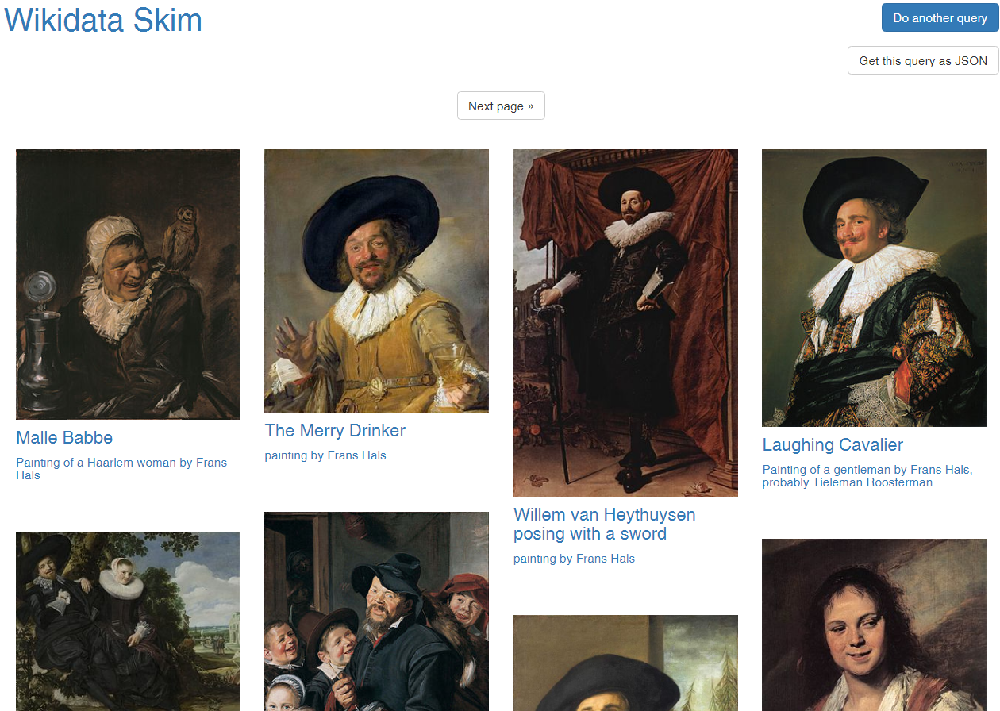
Crotos
Excellent image search. Shows links to WD, Wikimedia Commons, original website. Eg Frans Hals on Crotos

VIAF
Virtual International Authority File: 20 national libraries, 10 other contributors including Getty ULAN and Wikidata. Eg coreferencing cluster of Spinoza:
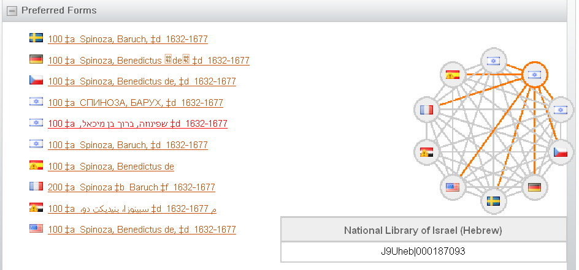
VIAF vs Wikidata (2015)
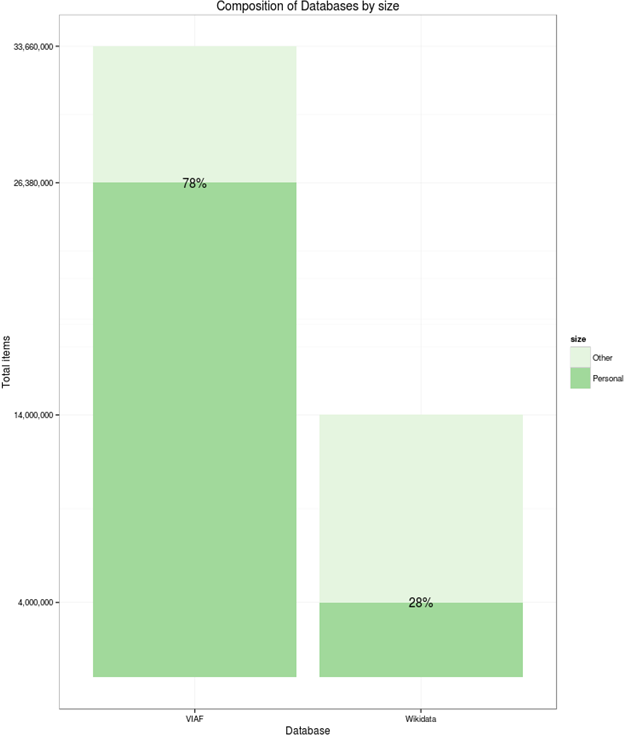
LODLAM Projects
GLAM and DH projects present a bewildering variety, eg
- Publishing Vocabularies/Thesauri as LOD
- Publishing Museum collections and National Bibliographies as LOD
- Enrichment of GLAM metadata with relevant thesauri, semantic and faceted search
- Study of artistic influence over time and space
- Literary traditions, parallel editions
- Poetic repertories
- Studying manuscripts, stematology (manuscript derivation)
- Historiography
- Studying charters, prosopography ("micro biographies"). "Prosopography is Greek for Facebook", SNAP:DRGN project, 2015
Research functions and sometimes integrated into Virtual Research Environments
Mellon "Space" Projects
The Andrew Mellon Foundation funds many projects in CH and DH, and a few software projects, including:
- CollectionSpace: museum collection management
- ArchiveSpace: archive management
- ResearchSpace: semantic integration based on CIDOC CRM, search, data & image annotation, data basket, etc
- ConservationSpace: line of business application for conservation specialists
ResearchSpace
Executed by the British Museum. Ontotext developed the first prototype (2010-2013). Semantic Search

ResearchSpace Search: Implementation
120 GraphDB rules, weaved using Literate Programming approach. Inference dependencies between props (text=input, gray=intermediate, white=output)
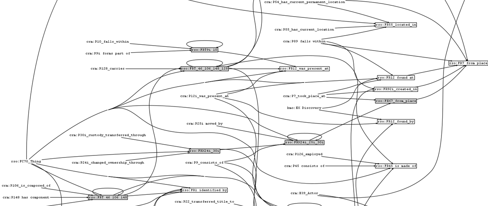
British Museum (BM) and YCBA LOD
- GraphDB runs the BM SPARQL endpoint. One of the biggest CH RDF collections (917M triples)
- As part of RS, developed mapping of BM data (2M objects) with BM, using CIDOC CRM
- This mapping was followed by the Yale Center for British Art (YCBA)
- Mapping Documentation: very comprehensive but is monolithic and has imprecisions. Includes the (in)famous diagram

ConservationSpace
Executed by a consortium led by US National Gallery of Art. Developed by Sirma ITT (Ontotext sibling). Based on Ontotext GraphDB (semantic metadata), Alfresco (document management), Smart Documents (Sirma product).

Europeana LOD and OAI PMH
Ontotext crated and hosted the Europeana SPARQL and OAI PMH services
.png)
Europeana Food and Drink
Food & Drink content, semantically enriched (place and FD topic). EFD Semantic App: open data, SPARQL endpoint, open source (Github). Uses GraphDB and ElasticSearch enterprise connector
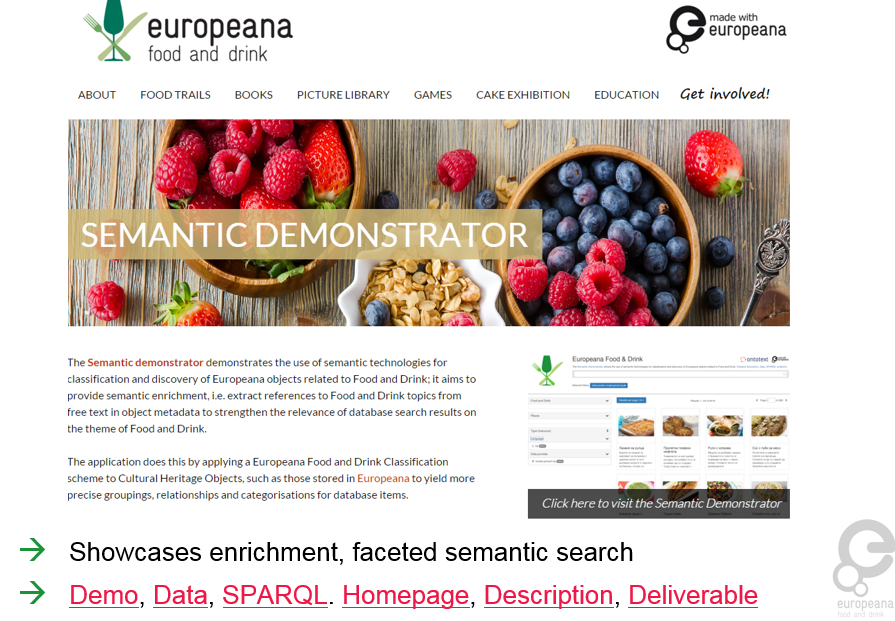
Tasty Bulgarian Recipes
Eg 150 with beer, including pancakes!

Getty Vocabulary Program LOD
GVP well-known and respected in GLAM. Dependencies: AAT-TGN-ULAN-CONA. Center of LODLAM cloud? GVP Training Materials (Diagram by J.Cobb, 2014)

GVP LOD Releases
AAT 2014-02, TGN 2014-08, ULAN 2015-03. Publicized in blog posts by J.Cuno, head of the Getty Trust
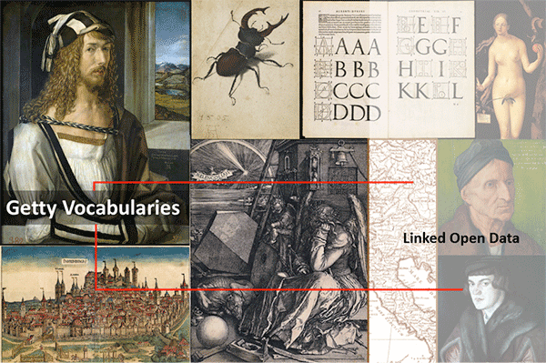
J.P.Getty Museum
Working with JPGM on publishing LOD. Considering CIDOC CRM, maybe also simpler ontologies. Hoping to generate R2RML from instance examples like:

J.P.Getty Museum and Wikidata
Discussing making data for Wikidata. WD has 480 Getty paintings, but the Museum has 180k artworks. WD query shown as image grid

American Art Collaborative
American Art Collaborative: 14 US art museums committed to establishing a critical mass of LOD on the semantic web. Consulting on CRM mapping.
- Work ongoing at https://github.com/american-art, eg see NPG mapping issues
- Eg possible mapping of "(sculpture) Cast after"
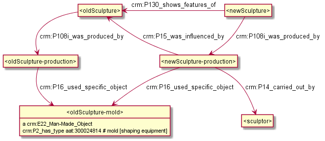
Questions?
Thank you for your time!
- Website: http://www.ontotext.com
- Contact: ilian.uzunov@ontotext.com